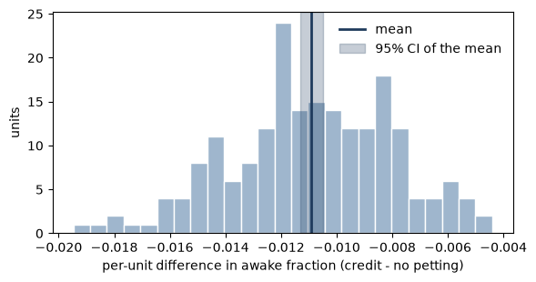

This notebook recomputes the official, pre-registered contrasts of the study from the published extract data/lives.parquet and compares them, number by number, with data/reference.json (the values computed in the original study). Nothing new is analysed here: the goal is to show that the published data reproduces the official numbers exactly.
The study in one paragraph. 9,600 simulated virtual-pet lives of 14 days each: 4 arms (what happens when the owner pets the pet right after it eats or plays) x 12 cells (4 owner types x 3 places) x 200 units. A unit is paired across arms: the same (unit, owner, place) appears once in every arm. See data/SCHEMA.md for the column dictionary.
Setup
We read the data with DuckDB (SQL straight over the parquet file) and use scipy only for the exact Student-t quantile.
The six measures are: share of decisions that were awake over days 1-14 (awake_frac_d1_14, the primary outcome) and over days 8-14, the share of decisions taken while the pet was neither deprived nor exhausted (time_well), the share of hunger episodes closed by eating (episode_rate), and the number of eat and play decisions.
Step 1: one paired difference per unit (DuckDB)
For a contrast A - B and a measure, the official method works unit by unit. For each unit (1..200) and each of its 12 cells (owner, place) we take the measure in arm A minus the measure in arm B. Averaging these 12 differences gives one number per unit, so each contrast and measure ends up with 200 paired differences. The SQL below pivots the arms side by side per (unit, owner, place), subtracts, and averages over the 12 cells.
Code
con = duckdb.connect()def paired_differences(a, b, measure):"""200 per-unit differences (A - B), averaged over the 12 (owner, place) cells.""" sql =f""" WITH wide AS ( SELECT unit, owner, place, max({measure}) FILTER (WHERE arm = '{a}') AS a, max({measure}) FILTER (WHERE arm = '{b}') AS b FROM read_parquet('{LIVES}') GROUP BY unit, owner, place ) SELECT unit, avg(a - b) AS diff FROM wide GROUP BY unit ORDER BY unit """return con.execute(sql).df()["diff"].to_numpy()d = paired_differences("petting_with_credit", "no_petting", "awake_frac_d1_14")print(len(d), "paired differences; first three:", d[:3].round(5))
200 paired differences; first three: [-0.00862 -0.00862 -0.01104]
Step 2: mean, 95% interval and effect size
From the 200 differences we compute:
the estimate: their mean;
the 95% confidence interval: mean +/- t x sd / sqrt(200), with sd the sample standard deviation (ddof = 1) and t the exact Student-t quantile with 199 degrees of freedom (scipy.stats.t.ppf(0.975, 199));
the effect size dz: mean / sd of the same differences (reported for context; it is not in reference.json).
Code
rows = []for cid, defn in CONTRASTS.items():for m in MEASURES: d = paired_differences(defn["a"], defn["b"], m) n =len(d) mean, sd = d.mean(), d.std(ddof=1) half = stats.t.ppf(0.975, n -1) * sd / np.sqrt(n) r = ref["contrasts"][m][cid] rows.append(dict( contrast=cid, measure=m, n=n, estimate=mean, ci_low=mean - half, ci_high=mean + half, dz=mean / sd, diff_est=abs(mean - r["mean"]), diff_low=abs(mean - half - r["ci_low"]), diff_high=abs(mean + half - r["ci_high"]), ))res = pd.DataFrame(rows)res["max_abs_diff"] = res[["diff_est", "diff_low", "diff_high"]].max(axis=1)res[["contrast", "measure", "estimate", "ci_low", "ci_high", "dz", "max_abs_diff"]].round(4)
contrast
measure
estimate
ci_low
ci_high
dz
max_abs_diff
0
D1
awake_frac_d1_14
-0.0109
-0.0113
-0.0105
-3.6952
0.0
1
D1
awake_frac_d8_14
-0.0062
-0.0069
-0.0056
-1.3813
0.0
2
D1
time_well
0.0183
0.0152
0.0215
0.8120
0.0
3
D1
episode_rate
0.0209
0.0147
0.0270
0.4753
0.0
4
D1
eat_decisions
14.1446
13.6399
14.6493
3.9078
0.0
5
D1
play_decisions
11.5279
10.9185
12.1373
2.6377
0.0
6
D2
awake_frac_d1_14
0.0096
0.0093
0.0100
3.5495
0.0
7
D2
awake_frac_d8_14
0.0124
0.0118
0.0130
2.9412
0.0
8
D2
time_well
0.0025
-0.0007
0.0056
0.1094
0.0
9
D2
episode_rate
0.0069
0.0009
0.0129
0.1593
0.0
10
D2
eat_decisions
15.3933
14.8428
15.9439
3.8989
0.0
11
D2
play_decisions
22.0708
21.4787
22.6630
5.1970
0.0
12
D3
awake_frac_d1_14
0.0070
0.0067
0.0073
3.1792
0.0
13
D3
awake_frac_d8_14
0.0091
0.0086
0.0096
2.5803
0.0
14
D3
time_well
0.0012
-0.0015
0.0038
0.0620
0.0
15
D3
episode_rate
0.0065
0.0006
0.0125
0.1534
0.0
16
D3
eat_decisions
16.1083
15.6614
16.5553
5.0257
0.0
17
D3
play_decisions
17.7175
17.2214
18.2136
4.9802
0.0
Step 3: headline numbers
The four headline results of the study, printed at four decimals.
The 200 per-unit differences behind the first headline number (D1, awake_frac_d1_14), with the mean and its 95% interval marked.
Code
import matplotlib.pyplot as pltd = paired_differences(CONTRASTS["D1"]["a"], CONTRASTS["D1"]["b"], "awake_frac_d1_14")r = res[(res.contrast =="D1") & (res.measure =="awake_frac_d1_14")].iloc[0]fig, ax = plt.subplots(figsize=(6, 3.2))ax.hist(d, bins=25, color="#9fb6cd", edgecolor="white")ax.axvline(r.estimate, color="#1f3b5c", lw=2, label="mean")ax.axvspan(r.ci_low, r.ci_high, color="#1f3b5c", alpha=0.25, label="95% CI of the mean")ax.set_xlabel("per-unit difference in awake fraction (credit - no petting)")ax.set_ylabel("units")ax.legend(frameon=False)fig.tight_layout()plt.show()

Gate: the reproduction must match the official numbers
For every contrast x measure (18 rows), the estimate and both interval limits must be within 1e-9 of reference.json, and the four headline numbers must read exactly as above. If anything fails, this cell stops the notebook with an error; no tolerance or method is adjusted to make it pass.
Code
TOL =1e-9assertlen(res) ==18, len(res)assert (res.n ==200).all()bad = res[res.max_abs_diff > TOL]assert bad.empty, "Mismatch vs reference.json:\n"+ bad.to_string()assertall(t["match"] for t in table), pd.DataFrame(table).to_string()print(f"GATE PASSED: 18/18 contrast x measure rows within {TOL:g} of reference.json "f"(largest |diff| = {res.max_abs_diff.max():.2e}); 4/4 headline numbers match.")
GATE PASSED: 18/18 contrast x measure rows within 1e-09 of reference.json (largest |diff| = 7.11e-15); 4/4 headline numbers match.